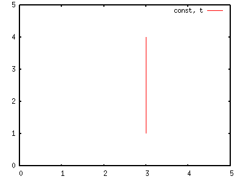
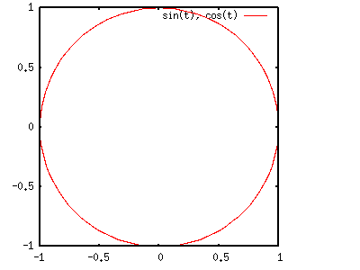
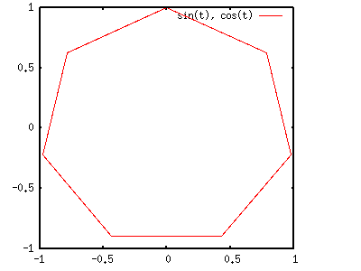
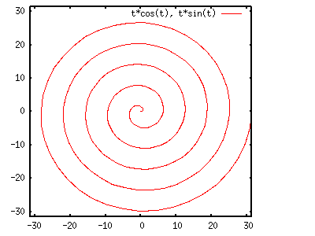
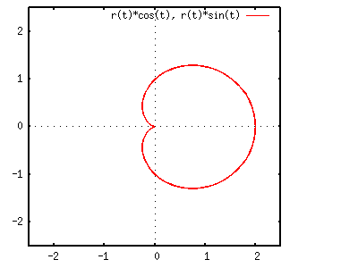
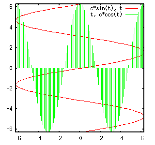

<!DOCTYPE HTML PUBLIC "-//W3C//DTD HTML 4.01 Transitional//EN">
<html lang="ja">
<head>
<title> gnuplot / parametric </title>
<!-- Generated 2003/ 9/16 -->
<!-- $Id: parametric.html,v 1.10 2004/12/19 09:23:44 kawano Exp $ -->
<meta http-equiv="content-type" content="text/html;charset=iso-2022-jp">
<link rel="stylesheet" href="style-new.css" type="text/css">
</head>
<body>

<table width="100%" border="0" cellpadding="0" cellspacing="0">
<tr><td bgcolor="#cccc90" width="320">
    <div align="left">
    <a href="index.html">
    
    </a></div></td>
    <td bgcolor="#cccc90">
      <div align="center"><h3> - not so Frequently Asked Questions - </h3> </div>
      <div class="update"> update 2004/9/5 </div>
    </td>
</tr>
<tr><td bgcolor="#fae8ba"></td>
    <td bgcolor="#fae8ba"><div class="navi"> 
<a href="index.html">           HOME </a> |
<a href="intro/index.html">     INTRODUCTION </a> |
<a href="general.html">         INFORMATION </a> |
<a href="gallery/index.html">   GALLERY </a> |
<a href="parametric-e.html">    ENGLISH </a>
</div></td></tr>
</table>
<hr class="topsep">


<table width="100%" border="0" cellpadding="0" cellspacing="0">
<tr><td id="menu">
 <p> not so FAQ</p>
  <ul>
    <li><a href="legend.html">      $BK^Nc(B(Legend) </a>
    <li><a href="tics.html">        $BL\@9(B(Tics) </a>
    <li><a href="label.html">       $B%i%Y%k(B(Label) </a>
    <li><a href="plot1.html">       2$B<!85%W%m%C%H(B </a>
    <li><a href="plot3d.html">      3$B<!85%W%m%C%H(B </a>
    <li><a href="polar.html">       $B6K:BI8%W%m%C%H(B </a>
    <li><a href="parametric.html">  $BG^2pJQ?tI=<((B </a>
    <ul>
      <li><a href="parametric.html#Q1">
           $BG^2pJQ?tI=<((B </a>
      <li><a href="parametric.html#Q2">
           $B?bD>@~(B </a>
      <li><a href="parametric.html#Q3">
           $B1_!$@5B?3Q7A(B </a>
      <li><a href="parametric.html#Q4">
           X$B<4$H(BY$B<4$NF~$l49$((B </a>
    </ul>
    <li><a href="datafile.html">    $B%G!<%?%U%!%$%k$N?tCM(B </a>
    <li><a href="postproc.html">    $B?^$rIA$$$?$=$N8e$O(B</a>
    <li><a href="misc1.html">       $B$=$NB>(B </a>
  </ul>
 <br>
</td>


<td id="content">


<h1><a name="top"> $BG^2pJQ?tI=<($N$"$l$3$l(B </a></h1>


<h2><a name="Q1">$BG^2pJQ?tI=<($K$D$$$F!%(B </a></h2>

<p> gnuplot$B$G(B2$B<!854X?t$rI=<($9$k$H$-$O!$(By=f(x)$B$H$$$&7A$G(By$B:BI8$rI=$7$^$9$,!$(B
$BG^2pJQ?t(B<i>t</i>$B$rMQ$$$F!%(B</p>
<pre>
   x = f(t)
   y = g(t)
</pre>
<p> $B$N$h$&$KG^2pJQ?tI=<($9$k$3$H$b$G$-$^$9!%$3$N7A<0$rMQ$$$k$3$H$G!$J#;((B
     $B$J4X?t$r(Bgnuplot$B$KI=<($5$;$k$3$H$,2DG=$K$J$j$^$9!%$J$*!$(B2$B$D$NJQ?t(B
     <i>u,v</i>$B$rMQ$$$F(B3 $B<!85$N6JLL$rI=8=$9$kJ}K!$O(B
     <a href="spherical_harmonics/parametric.html">$B5eLLD4OB4X?t$N9`(B</a> $B$G(B
     $B@bL@$7$F$$$^$9!%(B</p>

<p> $BG^2pJQ?t$rMQ$$$F%0%i%U$rIA$/$K$O!$$^$:(B <tt> set parametric </tt>$B$rMQ(B
     $B$$$F!$4X?t$,G^2pJQ?tI=<($5$l$F$$$k$3$H$rL@<($7$^$9!%(B<tt> plot </tt> 
     $B$KB3$1$F!$(Bx$B:BI8$H$J$k4X?t(Bf(t)$B$H(By$B:BI8$N(Bg(t)$B$r!$(B<tt> plot
     <i>f(t),g(t)</i> </tt>$B$N$h$&$KM?$($^$9!%(B</p>


<div class="top"><a href="parametric.html#top"></a></div>
<h2><a name="Q2">$B?bD>@~$NIA$-J}!%(B</a></h2>

<p> $B:G$bC1=c$+$D(By=f(x)$B$H$$$&4X?t7?$GI=8=$G$-$J$$$N$,!$(Bx=const.$B$H$$$&?bD>(B
     $B$N@~$G$9!%$3$N=D@~$OG^2pJQ?t(B<i>t</i>$B$rMQ$$$k$H!$(B</p>
<pre>
   x=const
   y=t
</pre>
<p> $B$H=q$-!$(B<i>t</i>$B$rE,Ev$JHO0O$GJQ2=$5$;$?>l9g$KAjEv$7$^$9!%(B<i>t</i>$B$N(B
     $BHO0O$O(B<tt> set trange </tt>$B$G@_Dj$G$-$^$9!%(B</p>


<pre class="sample">
gnuplot&gt; set parametric

        dummy variable is t for curves, u/v for surfaces
gnuplot&gt; const=3
gnuplot&gt; set trange [1:4]
gnuplot&gt; set xrange [0:5]
gnuplot&gt; set yrange [0:5]
gnuplot&gt; plot const,t
</pre>


<p>$B$3$NNc$G$O(Bx=3$B$N=j$K?bD>@~$rIA$$$F$$$^$9!%(B<tt> set trange [1:4] </tt>
     $B$H$7$F$$$^$9$N$G!$@~J,$N(By$B:BI8$O(B1$B$+$i(B4$B$^$G$H$J$C$F$$$^$9!%$b$7(B
     <tt>trange</tt>$B$r@_Dj$7$J$$$J$i!$%0%i%U$NI=<(NN0h0lGU$K@~$,0z$+$l$^(B
     $B$9!%(B</p>


<div class="top"><a href="parametric.html#top"></a></div>
<h2><a name="Q3">$B1_!$@5B?3Q7A$NIA$-J}!%(B</a></h2>

<p>$B1_$NG^2pJQ?tI=<($O!$(B</p>
<pre>
   x=cos(t)
   y=sin(t)
</pre>
<p>$B$GM?$($i$l!$(B<i>t</i>$B$r(B0$B$+$i(B2$B&P$^$GJQ2=$5$;$l$P1_$,IA$1$^$9!%=D2#Hf$O!$(B
     $Be:No$J1_$K$J$k$h$&$K!$8GDj$7$F$$$^$9!%(B<i>t</i>$B$NHO0O$O!$(B
     <tt>plot</tt>$B%3%^%s%I$N%*%W%7%g%s$GM?$($F$$$^$9!%(B</p>

<pre class="sample">
gnuplot&gt; set parametric

        dummy variable is t for curves, u/v for surfaces
gnuplot&gt; set size square
gnuplot&gt; set xrange [-1:1]
gnuplot&gt; set yrange [-1:1]
gnuplot&gt; plot [0:2*pi] cos(t),sin(t)
</pre>

<div align="center">

</div>

<p> $B>e$N?^$G$O!$JQ?t(B<i>t</i>$B$OO"B3E*$KJQ2=$7$F$$$k$h$&$K8+$($^$9$,!$<B:](B
     $B$K$O(B<i>t</i>$B$O$"$kIQEY$GJQ2=$7!$$=$NJQ2=$NDxEY$O(B<tt> set samples
     </tt>$B$G7h$^$j$^$9!%(Bdefault$B$O(B100$B$G$9$,!$(B<tt> set samples 8 </tt>$B$H$9(B
     $B$l$P!$(Bgnuplot$B$O(B0$B$+$i(B2$B&P$NHO0O$G(B8$B$D$N(B<i>t</i>$B$rH/@8$7$F%0%i%U$rI=<((B
     $B$7!$7k2L$H$7$F1_$O@5<73Q7A$K$J$j$^$9!%$D$^$j!$@5(BN$B3Q7A$rIA$-$?$1$l$P!$(B
     <tt> set samples <i>N+1</i></tt>$B$H$9$l$PNI$$$3$H$K$J$j$^$9!%(B</p>
<br> 

<div align="center">

</div>

<p> 2$B<!854X?t$NG^2pJQ?tI=<($O(B<a href="polar.html">$B6K:BI8(B</a>$B$GI=<($5$l$?(B
     $B4X?t$rI=<($9$k$N$KE,$7$F$$$^$9!%(B2$B<!856K:BI8$G$OJQ?t$H$7$FH>7B(B
     <i>r</i>$B$HJP3Q(B<i>theta</i>$B$,MQ$$$i$l$^$9$,!$$3$N(B<i>theta</i>$B$K%Q%i(B
     $B%a!<%?(B<i>t</i>$B$r;H$$$^$9!%H>7B(B<i>r</i>$B$O3QEY$N4X?t$H$7!$(B<i>r(t)</i> 
     $B$H(B<i>t</i>$B$rMQ$$$k$H!$G$0U$N(B(x,y)$B:BI8$O!$<!<0$N4X78$+$i7W;;$G$-$^$9!%(B
     </p>

<pre>
   x=r(t)*cos(t)
   y=r(t)*sin(t)
</pre>

<p> $B1_$O(Br(t)=const.$B$NFC<l$JNc$G$9!%1_$NH>7B$r(B<i>t</i>$B$KHfNc$9$k$h$&$KJQ(B
     $B2=$5$;$l$P!$124,$K$J$j$^$9$M!%(B</p>

<pre class="sample">
gnuplot&gt; set xrange [-10*pi:10*pi]
gnuplot&gt; set yrange [-10*pi:10*pi]
gnuplot&gt; plot [0:10*pi] t*cos(t),t*sin(t)
</pre>

<div align="center">

</div>

<p>$B0J2<$NNc$O(Br(t)=const*(1+cos(t))$B$H$7$FIA$+$l$k(BCardioid$B$G$9!%(B</p>

<pre class="sample">
gnuplot&gt; set parametric

        dummy variable is t for curves, u/v for surfaces
gnuplot&gt; r(t) = 1+cos(t)
gnuplot&gt; plot [0:2*pi] r(t)*cos(t),r(t)*sin(t)
</pre>

<div align="center">

</div>


<div class="top"><a href="parametric.html#top"></a></div>
<h2><a name="Q4">X$B<4$H(BY$B<4$rF~$l49$($k!%(B</a></h2>

<p> $B4X?tI=<($OIaDL(B y=f(x) $B$H=q$+$l$^$9$,!$G^2pJQ?t$rMQ$$$k$H(B x=f(y)$B$N%0(B
     $B%i%U$rI=<($9$k$3$H$,$G$-$^$9!%(By=t$B$H9M$(!$(Bx$B$rG^2pJQ?t(B<i>t</i>$B$N4X?t(B 
     f(t) $B$GI=8=$7$^$9!%(B</p>


<pre class="sample">
gnuplot&gt; set parametric

        dummy variable is t for curves, u/v for surfaces
gnuplot&gt; c=2*pi
gnuplot&gt; set size square
gnuplot&gt; set trange [-c:c]
gnuplot&gt; set xrange [-c:c]
gnuplot&gt; set yrange [-c:c]
gnuplot&gt; plot c*sin(t),t with lines, t,c*cos(t) with impulses
</pre>


<p> 2$B$D$N%0%i%U$r=E$M$FI=<($7$F$$$^$9!%0l$D$O(B y=2pi*cos(x)$B$G!$NP$N<JLOMM$G(B
     $BI=<($7$^$7$?!%$b$&0l$D$O(B x=f(t)=2pi*sin(y)$B$G@V$N<B@~$G$9!%(B</p>

<p> <tt> with impulse </tt>$B$O!$%0%i%U>e$NE@$+$i(BY=0$B$N<4$K?bD>$KB-$r9_$m$7(B
     $B$^$9!%$3$3$NNc$G:G=i$N@V$N<B@~(B x=2pi*sin(y) $B$KBP$7$F(B <tt> with
     impulses </tt>$B$r;H$C$F$b!$$d$O$j?bD>@~(B($B=D<J(B)$B$K$J$j$^$9!%(B</p>


<br clear="all">
<div class="top"><a href="parametric.html#top"></a></div>
</td></tr></table>
<hr class="topsep">


</body>
</html>

